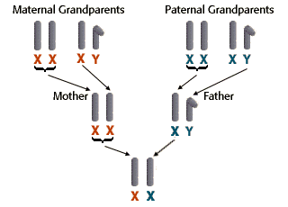

Color Blindness Problem Set
Problem 8: Grandparents
Tutorial to help answer the questionWe don't know if any of Audrei's grandparents were red-green color blind, but we can make some educated guesses. Is it possible that all of Audrei's grandparents have normal vision?
A. Yes B. No
Tutorial
|
The X chromosomes are inherited from either maternal grandparent and paternal grandmother
The diagram shows how the X and Y chromosomes are inherited from the maternal and paternal grandparents to the parents to the son.
The Y chromosome is passed strictly from the father to male children in each generation. No male from the father's side of the family can be a source of genes on a women's X chromosome. |
|  |


The Biology Project
University of Arizona
Saturday, October 10, 1998
Contact the Development Team
http://www.biology.arizona.edu
All contents copyright © 1998. All rights reserved.